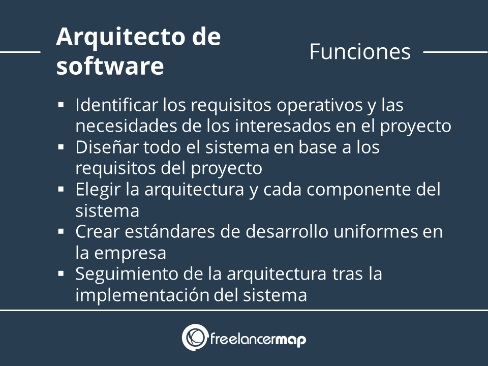
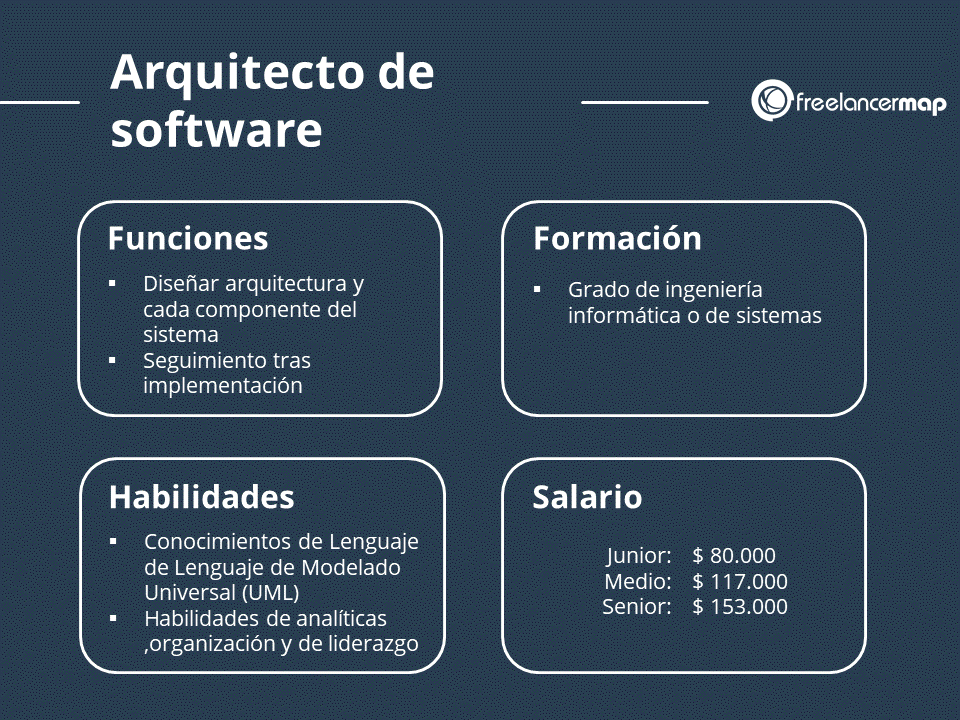
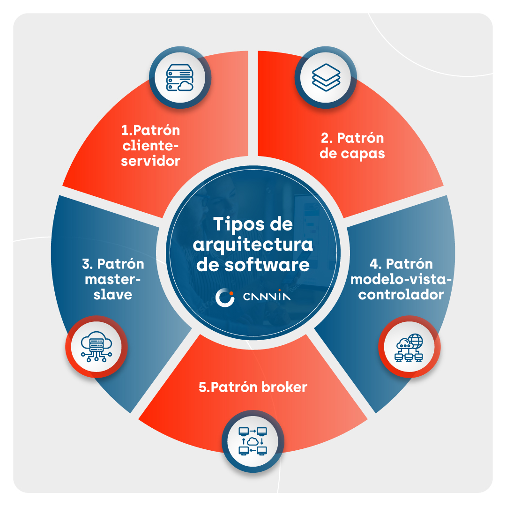
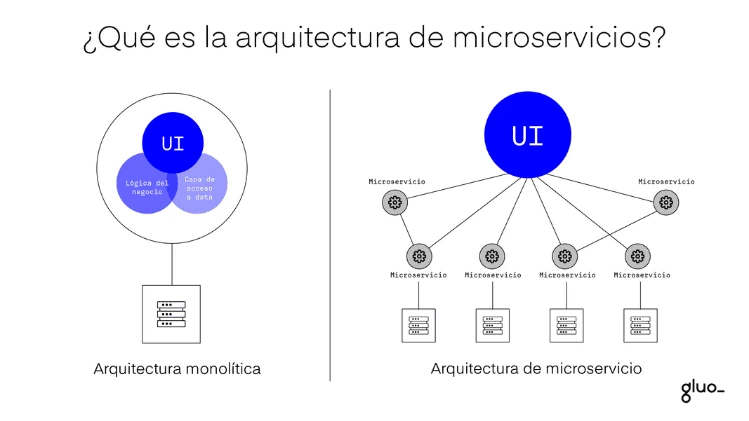
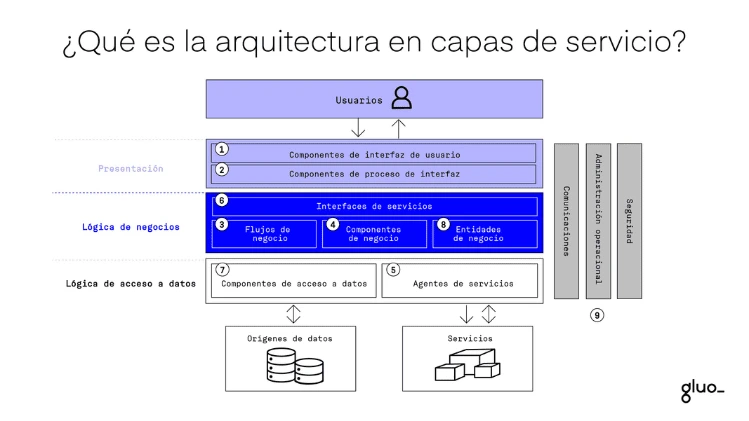
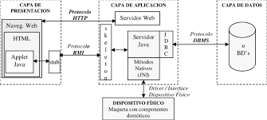

Arquitectura de Software

1Definición
La arquitectura de software es la estructura fundamental de un sistema, que organiza sus componentes y define cómo interactúan entre sí.
2Contexto en el desarrollo
Actúa como un plano o modelo que guía a los desarrolladores y al equipo de trabajo, asegurando que el sistema cumpla con requisitos técnicos, de negocio y de calidad.
3Importancia en proyectos
Permite tomar decisiones tempranas sobre tecnologías, estilos y patrones, facilitando la escalabilidad, mantenibilidad y seguridad del software a lo largo de su ciclo de vida.
Elementos Claves







Expertos en:

Analisis de datos

Análisis sistémico